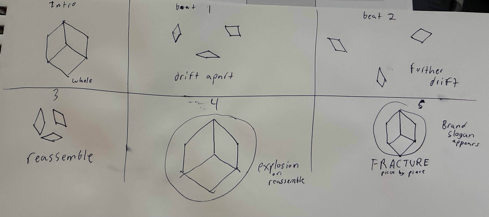
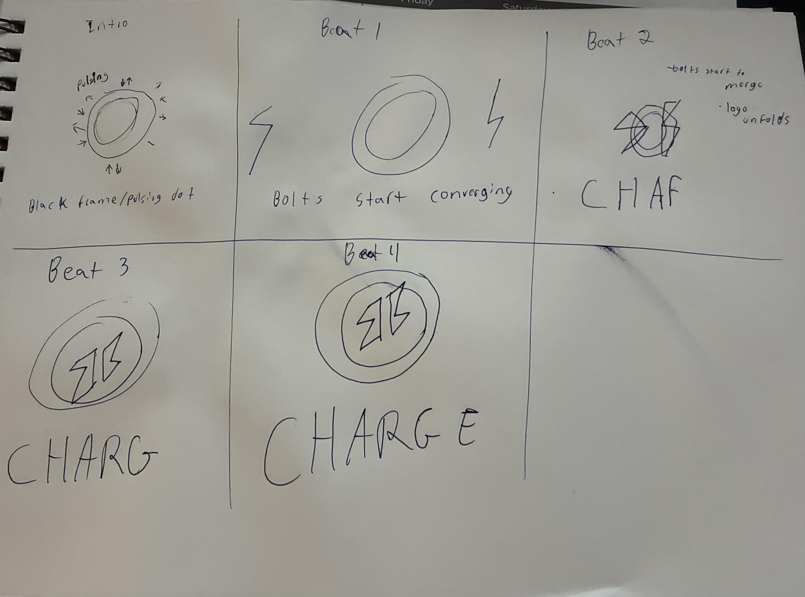
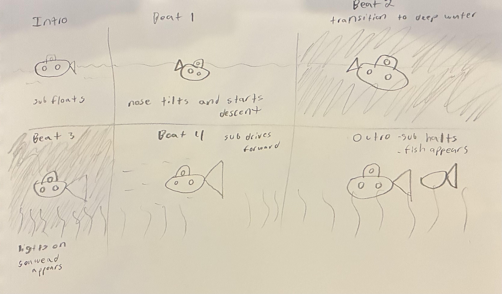

FRACTURE
Creative Brief
Goal: Deliver a short, high-energy brand identity animation.
Concept: A 10-second logo animation for a fictional brand. A solid polygon fractures into three wedge fragments that pull apart and drift, then reverse and converge back toward center, interlocking into a single complete polygon at the moment of impact — becoming whole again. A glow and shockwave mark that moment of reassembly, then the brand name and tagline are revealed.
Possible applications: Brand intro/outro bumper, title sequence, social media brand reveal, app splash screen.
Storyboard

Final Animation
Process
I built the assets in Illustrator (three wedge fragments, the shockwave, and the wordmark) and animated everything in After Effects. I went with a fracture-and-reassemble concept because it gives the piece a clear payoff — three pieces that complete each other rather than shapes just moving around on screen. Splitting the polygon into three wedges meant each fragment needed its own independent position and rotation animation to sell the drift-apart, and all three had to land back in exact alignment on the same frame or the reassembly wouldn't read as a single whole shape again. The glow and shockwave at the moment of impact was built to reinforce that payoff rather than sit on top as a separate effect. For the wordmark reveal, I used a track matte wipe instead of a simple fade, so the reveal feels triggered by the impact itself rather than happening on its own timer.
CHARGE
Creative Brief
Goal: Deliver a short, high-energy brand identity animation.
Concept: A 5-second logo animation for a fictional energy/performance brand. Two halves of a lightning bolt converge from opposite sides of the frame and interlock into a single complete bolt at the moment of impact, triggering a glowing core and the reveal of the CHARGE wordmark.
Possible applications: Energy drink or performance brand sting, esports/stream intro, product launch teaser, app splash screen.
Storyboard

Final Animation
Process
I built the logo assets in Illustrator (two bolt halves and a glowing core) and animated the piece in After Effects. I went with the lightning bolt concept for the same reason as FRACTURE — it gives the animation a clear payoff, two pieces that complete each other rather than shapes just moving around on screen. Splitting the bolt into two halves meant each half needed its own independent position and rotation animation to sell the idea that they're racing toward each other from opposite sides, and both had to land in exact alignment at the same moment or the bolt wouldn't read correctly. The glowing, pulsing core at the point of impact adds to the sense of energy and momentum. As with FRACTURE, I used a track matte wipe for the wordmark reveal instead of a simple fade, which keeps the whole build feeling triggered by the impact rather than running on its own separate timer.
Found a Fish
Creative Brief
Goal: Create a short animated sequence in Adobe After Effects demonstrating transform controls, masking techniques, and basic animation principles.
Concept: The animation depicts a submarine diving from the surface of the ocean into the deep sea. The submarine begins floating calmly at the surface, then tilts downward and descends. A track matte wipe transition marks the shift from the bright surface water to the dark, deep ocean environment. Once submerged, the submarine's headlight switches on and seaweed appears to give a sense of depth and forward movement, before the submarine stops and finds a fish. The animation then eases into a fade to black.
Possible applications: Educational/explainer intro, children's media title sequence, exhibit or aquarium display loop, animation-fundamentals demo reel piece.
Storyboard

Final Animation
Process
I built the scene from three Illustrator files — the submarine as separate layered parts (body, tower, periscope, fin, portholes, headlight), a bright "above" layer (sun, light water, ripples), and a dark "below" layer (dark water, seaweed, fish, headlight glow) — then animated all of it in After Effects. I chose an underwater dive concept because it gives a clear visual narrative with a natural beginning, middle, and end, while giving me a reason to apply a wide range of transform types across several independent elements. The descent, paired with the shift from light to dark water, builds a sense of depth and passing time, and the track matte wipe gives that transition a deliberate, visible moment instead of a simple crossfade. Turning the headlight on once the submarine is submerged ties the lighting change directly to the story beat rather than treating it as just a technical effect.